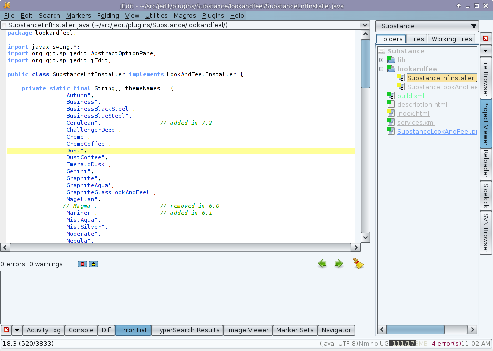
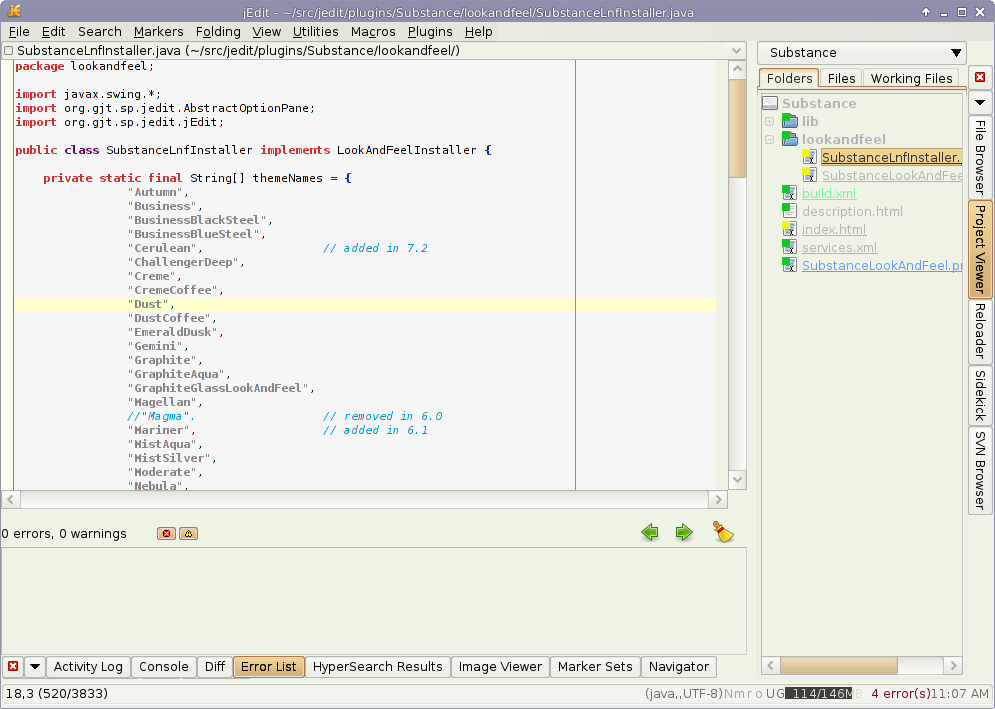
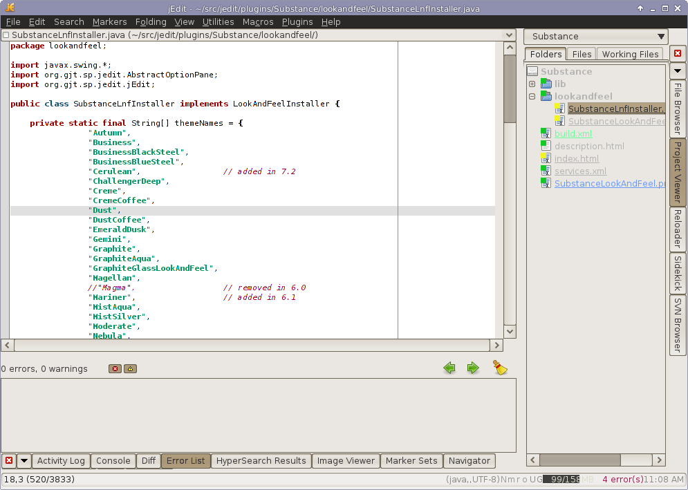
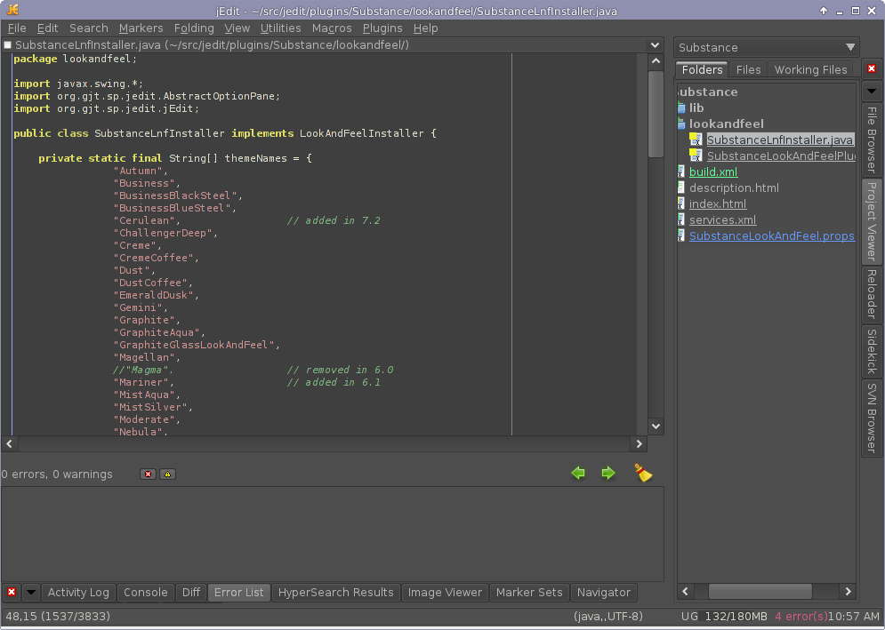
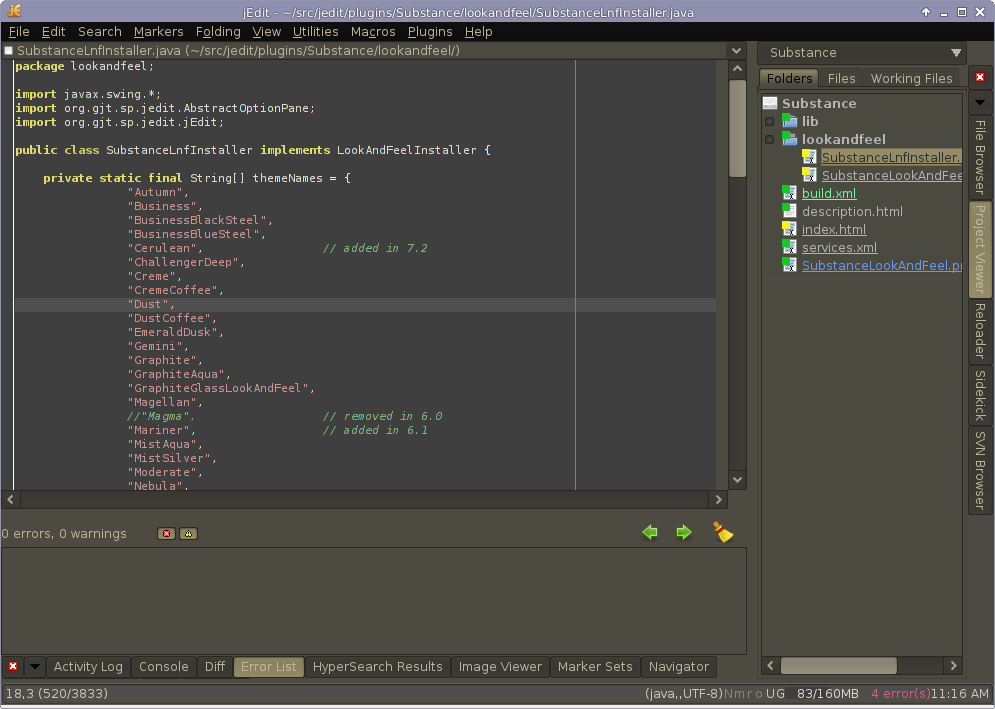

This plugin provides the Substance Look and Feel to jEdit.
All configuration for this plugin is done in the Look and Feel plugin. Look in Plugins - Plugin Options - Look And Feel, then select "Substance" from the Look and Feel dropdown. You will have the option to choose from 28 different themes.
Autumn theme with Autumn editor scheme:
Business theme with danson editor scheme:

Business Black Steel theme with danson editor scheme:

Business Blue Steel theme with danson editor scheme:

Cerulean theme with danson editor scheme:

Challenger Deep theme with Blue editor scheme:

Creme theme with Brad Mace editor scheme:

Creme Coffee theme with Mello editor scheme:

Dust theme with March First editor scheme:

Emerald Dusk theme with Green editor scheme:

Gemini theme with Erich editor scheme:

Graphite theme with Zenburn editor scheme, this is my personal favorite:

Magellan theme with Dark Blue editor scheme:

Mist Silver theme with Brad Mace editor scheme:

Nebula theme with Mello editor scheme:

Office Blue 2007 theme with Mello editor scheme:

Sahara theme with Flowerpot editor scheme:

Twilight theme with Zenburn editor scheme:

The Substance project has been forked and is being actively maintained:
https://github.com/Insubstantial/insubstantial
Substance has a BSD license:
Copyright (c) 2005-2010 Substance, Kirill Grouchnikov.
All Rights Reserved.
Redistribution and use in source and binary forms, with or without modification, are permitted provided that the following conditions are met:
Redistributions of source code must retain the above copyright notice, this list of conditions and the following disclaimer.
Redistributions in binary form must reproduce the above copyright notice, this list of conditions and the following disclaimer in the documentation and/or other materials provided with the distribution.
Neither the names of Kirill Grouchnikov nor the names of its contributors may be used to endorse or promote products derived from this software without specific prior written permission.
THIS SOFTWARE IS PROVIDED BY THE COPYRIGHT HOLDERS AND CONTRIBUTORS "AS IS" AND ANY EXPRESS OR IMPLIED WARRANTIES, INCLUDING, BUT NOT LIMITED TO, THE IMPLIED WARRANTIES OF MERCHANTABILITY AND FITNESS FOR A PARTICULAR PURPOSE ARE DISCLAIMED. IN NO EVENT SHALL THE COPYRIGHT OWNER OR CONTRIBUTORS BE LIABLE FOR ANY DIRECT, INDIRECT, INCIDENTAL, SPECIAL, EXEMPLARY, OR CONSEQUENTIAL DAMAGES (INCLUDING, BUT NOT LIMITED TO, PROCUREMENT OF SUBSTITUTE GOODS OR SERVICES; LOSS OF USE, DATA, OR PROFITS; OR BUSINESS INTERRUPTION) HOWEVER CAUSED AND ON ANY THEORY OF LIABILITY, WHETHER IN CONTRACT, STRICT LIABILITY, OR TORT (INCLUDING NEGLIGENCE OR OTHERWISE) ARISING IN ANY WAY OUT OF THE USE OF THIS SOFTWARE, EVEN IF ADVISED OF THE POSSIBILITY OF SUCH DAMAGE.